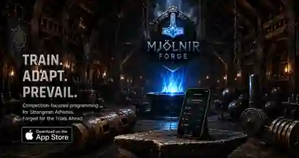
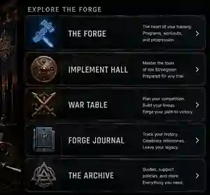
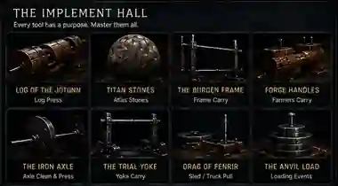
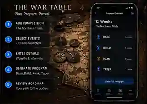
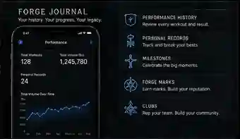

Mjölnir Forge for iOS
Train. Adapt. Prevail.
Competition-focused programming, workout logging, and performance tracking forged for strongman athletes.
Forging the first App Store release
Get support
Explore the Forge
Everything needed for the trials ahead
Move from competition planning to event preparation, session execution, and a durable record of progress.

The Implement Hall
Every tool has a purpose
Build familiarity with the events that define strongman. Mjölnir Forge organizes preparation around the implements, demands, and conditions of the competition in front of you.

The War Table
Plan the competition. Forge the path.
Start with the trial ahead: select the competition, enter the events, weights, intervals, and available equipment, then build a training roadmap through base, build, peak, and taper phases.
- 01Add the competition
Anchor the program to a real date and objective.
- 02Select the events
Prepare for the exact implements and demands.
- 03Generate the roadmap
Build progressive phases leading into competition day.


Forge Journal
Your history. Your progress. Your legacy.
Keep the record of what you completed, how you performed, and what you earned along the way. The Forge Journal brings workouts, personal records, milestones, Forge Marks, and club achievements into one view.
Performance historyReview completed sessions and results.
Personal recordsTrack and break your best performances.
Milestones and Forge MarksRecognize consistency, competition, and progress.
The Archive
Support and guidance
Find answers to common questions or contact support directly. Mjölnir Forge is local-first and does not currently require a separate account.
Contact support Typical response time: within 48 hours.Account and accessLocal data, subscriptions, and restoring paid access
No separate Mjölnir Forge account
- Your athlete profile, programs, and workout logs are stored on your device.
- If you delete the app or move devices, local data may not appear unless restored through your device backup.
If paid access is not showing
- Connect the device to the internet.
- Confirm you are using the Apple ID that purchased the subscription.
- Use Restore Purchases or Refresh App Store Entitlement inside the app.
- Close and reopen the app if Apple shows the subscription as active.
Training and programsProfile setup, competition programs, adjustments, and logging
Before creating a program
- Confirm training days, equipment, weight units, body weight, injuries, and training maxes.
- For a competition program, enter the events and target weights before generating the plan.
- Use current and realistic maxes so the plan begins where you are now.
Mjölnir Forge is a planning tool and does not replace a coach, clinician, or your own judgment during training.
Pregnancy and postpartumConservative planning without replacing medical guidance
- Use the applicable pregnancy or postpartum mode and keep dates, clearance status, and symptoms current.
- Follow guidance from your doctor, midwife, pelvic health physical therapist, or another qualified clinician.
- Stop training and seek appropriate care when warning symptoms occur.
Pregnancy and postpartum guidance is educational and conservative. It is not medical care, diagnosis, or treatment.
Reports and exportTraining reports, program PDFs, and structured exports
- Open a saved program.
- Tap the share icon.
- Select the available report or program export.
- Save or share the generated file through iOS.
If an export fails, reopen the app, try again, and contact support with the message displayed.
Billing and subscriptionsCancellation, restore purchases, and Apple refunds
Manage billing through Apple
Open iPhone Settings, tap your name, choose Subscriptions, and select Mjölnir Forge. Apple controls billing, cancellation, and refund eligibility.
Use Restore Purchases after reinstalling the app or switching devices.
Privacy
Local-first by design
Training profiles, programs, workout logs, and related settings are stored on your device unless you choose to share information with support.
Read the Privacy PolicyTerms
Use, subscriptions, and safety
Review the terms governing app use, training and health limitations, subscriptions, warranties, and Apple-specific provisions.
Read the EULA